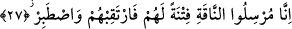
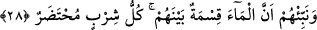
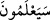

26. Yarın onlar, yalancı ve şımarığın kim olduğunu bileceklerdir.
Bu âyet-i kerîme’de, Allah’ın Sâlih (a.s.)’a vaad, kavmine ise bir tehdîd olmak üzere
ne buyurduğu hikâye yoluyla ifâde buyurulmaktadır. “/Seya’lemûne” fiilinin
başındaki “sin” harfi cümlede haber verilen mânânın yakın olduğunu pekiştirerek
bildirmektedir. Yarın anlamındaki “” zarfı, içinde bulunduğumuz günü takip eden gün
olup, gelecek zamanda azabın gerçekleşeceği vakit kasdedilmiştir, özel bir gün veya
kıyâmet günü değildir. Çünkü, aşağıda gelecek olan “Biz onlara dişi deveyi
göndereceğiz” (el-Kamer, 54/27) âyet-i kerîmesi, vaadedilenin kesin olarak
başlangıcını beyân içindir. Âyet-i kerîmenin anlamı şöyle olur: Hırçınlığı ve gururu
yükselmeğe iten yalancı küstah kim miş, Sâlih (a.s.) mı, yoksa onu yalanlayanlar mı?
Elbette yakında onlar bileceklerdir. Allah Sâlih (a.s.)’dan, onların isnad ettikleri,
yalancı, küstah vasfını reddettiği için onu şereflendirmektedir. Yâni sen değil, yalancı
ve küstah onlardır, anlamına gelir.
27. Gerçekten onları imtihan etmek için dişi deveyi gönderen biziz. Sen onları
gözetle ve sabret.
“Gerçekten onları imtihan etmek için dişi deveyi gönderen biziz.” Onların
istedikleri şekilde, tek kayadan oluşan veya yayvan tepeden o deveyi çıkaracağız.
Rivâyete göre, Sâlih (a.s.)’ın kavmi, onu zora sokmak için tepenin ucunda bulunan,
“kâsibe” denilen bir kayadan, kırmızı, on aylık gebe, iri ve kusursuz bir deve
çıkarmasını istediler. Bunun üzerine Allah Sâlih (a.s.)’a onların istedikleri nitelikteki
deveyi, onları denemek için çıkaracağını vahyetti. Bu bir mûcizedir, mûcize bir
denemedir. Çünkü onunla mükâfât görecek olan, azab olacaktan ayrılır.
“Sen onları gözetle ve sabret.” Onları bekle, ne yapacaklarını görürsün. Eziyetlerine
tam bir sabırla sabret.
28. Onlara, suyun aralarında paylaştırıldığını haber ver. Her biri kendi içme
sırasında gelsin.
“Onlara, suyun aralarında paylaştırılacağını haber ver.” Bir gün deveye, bir gün
de onlara olmak üzere paylaştırılmıştır. “İçme sırası kiminse o gelip suyunu alsın.” Su
payından faydalanma sırası gelen hazır bulunsun. Suyun paylaştırılmış olması, ikiye
ayrılıp bir kısmı devenin, diğeri de onların anlamına değil, su içme sırası münâvebe